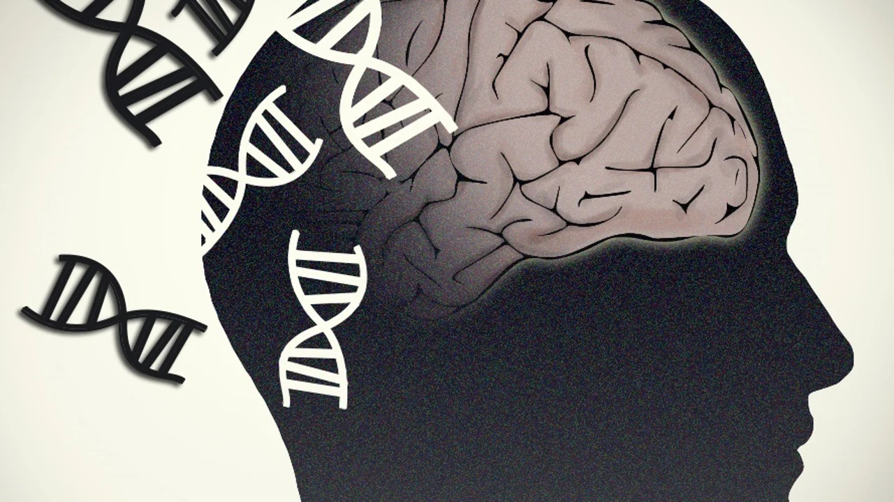
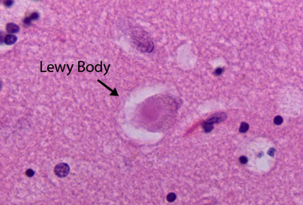

Causas
En la enfermedad de Parkinson, algunas células nerviosas (neuronas) del cerebro se degradan o mueren progresivamente. Muchos de los síntomas obedecen a una pérdida de las neuronas que producen dopamina, un tipo de neurotrasmisor del cerebro. Cuando los niveles de dopamina disminuyen, esto causa una actividad cerebral anormal, lo genera trastornos del movimiento y otros síntomas de la enfermedad de Parkinson. Se desconoce la causa de la enfermedad de Parkinson, pero varios factores parecen influir, como los siguientes:
- Genes: Los investigadores han identificados cambios genéticos específicos que pueden causar la enfermedad de Parkinson. Sin embargo, estas son poco comunes, salvo algunos casos en que muchos miembros de la familia tienen enfermedad de Parkinson. No obstante, ciertas variaciones genéticas parecen aumentar el riesgo de tener enfermedad de Parkinson, pero con un riesgo relativamente menor de la enfermedad de Parkinson para cada uno de estos marcadores genéticos.
- Desencadenantes ambientales: La exposición a ciertas toxinas o factores ambientales puede aumentar el riesgo de tener la enfermedad de Parkinson en el futuro, pero el riesgo es pequeño.

Los investigadores también han observado que se producen muchos cambios en el cerebro de las personas con la enfermedad de Parkinson, aunque no resulta claro por qué ocurren estos cambios. Entre estos cambios, se incluyen los siguientes:
- La presencia de cuerpos de Lewy: Las masas de sustancias específicas dentro de las neuronas cerebrales son marcadores microscópicos de la enfermedad de Parkinson. Estas masas se llaman cuerpos de Lewy, y los investigadores creen que estos cuerpos de Lewy contienen un indicio importante sobre la causa de la enfermedad de Parkinson.
- Alfa-sinucleína que se encuentra dentro de los cuerpos de Lewy: Si bien se encuentran muchas sustancias en los cuerpos de Lewy, los científicos creen que una sustancia importante es la proteína natural y generalizada, llamada alfa-sinucleína (a-sinucleína). Se encuentra en todos los cuerpos de Lewy en forma de una masa que las células no pueden descomponer. Actualmente, esta sustancia es un foco importante entre los investigadores de la enfermedad de Parkinson.
